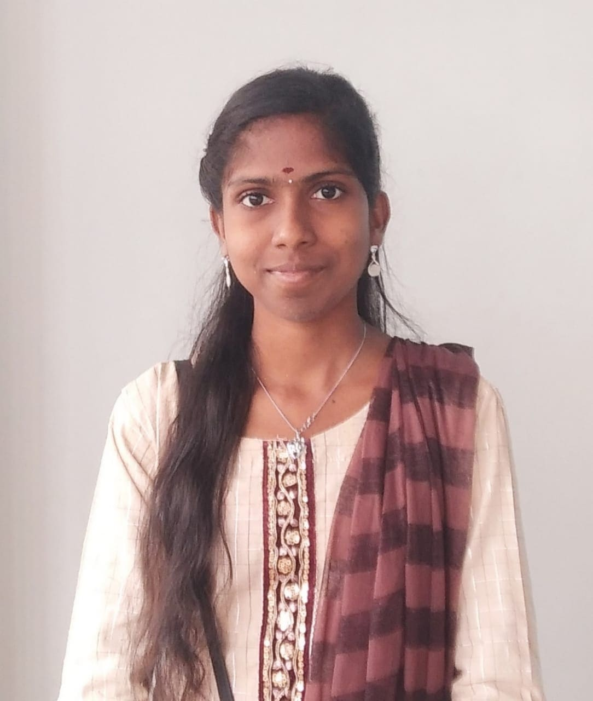

About Me

I'm Malarkodi R
I am a native of Salem, currently pursuing a Bachelor of Engineering in Electronics and Communication in my third year at Government College of Engineering, Salem. I completed my schooling at Vedhha Vikass Higher Secondary School. In addition to my academic and personal pursuits, I have a deep affection for pets and enjoy caring for animals in my leisure time. Also, I have a keen interest in music, which I find both relaxing and inspiring in my free time.